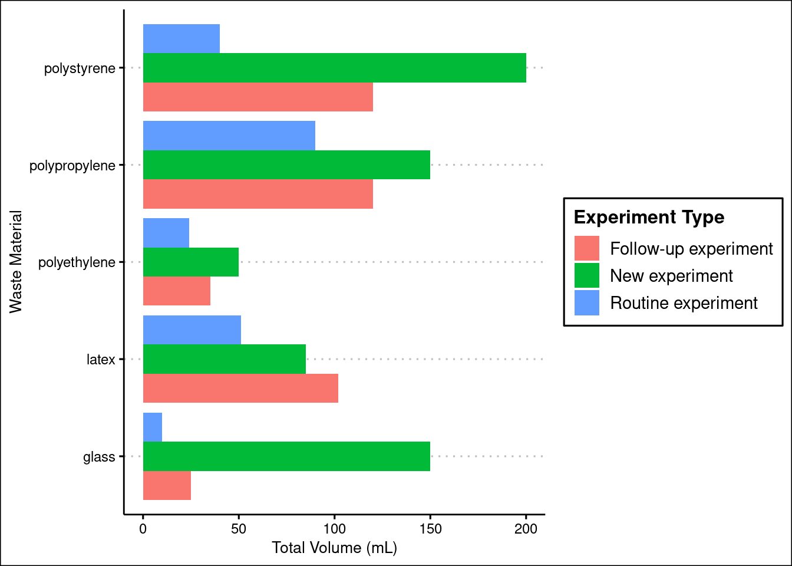

library(dplyr)
library(ggthemes)
library(gt)
library(ggplot2)Project
Introduction
Methods
Results
library(readr)
tidy_data <- read_rds(here::here("data/processed/tidy_data.rds"))summary_stats <- tidy_data |>
group_by(tool_used) |>
summarise(
count = sum(quantity),
mean = round(mean(quantity), 1),
median = round(median(quantity), 1),
sd = round(sd(quantity), 1)
)See Table 1 for data about tools.
summary_stats |>
gt() |>
tab_header(title = "Summary Statistics for Each Tool Used") |>
cols_label(
tool_used = "Tool",
count = "Count",
mean = "Mean",
median = "Median",
sd = "Standard Deviation"
) | Summary Statistics for Each Tool Used | ||||
|---|---|---|---|---|
| Tool | Count | Mean | Median | Standard Deviation |
| eppi_tubes | 34 | 2.3 | 1 | 3.2 |
| falcon_tubes | 32 | 2.1 | 2 | 1.8 |
| flasks | 18 | 1.2 | 1 | 1.5 |
| glass_tips | 31 | 2.1 | 1 | 2.0 |
| pair_of_gloves | 38 | 2.5 | 2 | 1.5 |
| pipette_tips | 239 | 15.9 | 12 | 15.4 |
| ser_pipettes_10ml | 21 | 1.4 | 0 | 3.8 |
| ser_pipettes_25ml | 8 | 0.5 | 0 | 1.3 |
| ser_pipettes_50ml | 1 | 0.1 | 0 | 0.3 |
| ser_pipettes_5ml | 14 | 0.9 | 1 | 1.2 |
In Figure 1 we see that….
# Create the stacked bar chart
ggplot(tidy_data, aes(x = experiment_type, y = total_volume, fill = tool_used)) +
geom_bar(stat = "identity", position = "stack") +
labs(x = "Experiment Type", y = "Total Volume (mL)", fill = "Waste Type",
title = "Amount of Waste Produced Based on Experiment") +
theme_clean()
ggplot(tidy_data, aes(x = total_volume, y = material, fill = experiment_type)) +
geom_bar(stat = "identity", position = "dodge") +
labs(x = "Total Volume (mL)", y = "Waste Material", fill = "Experiment Type") +
theme_clean()